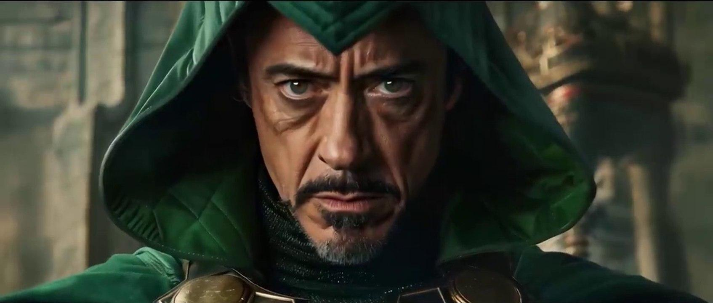
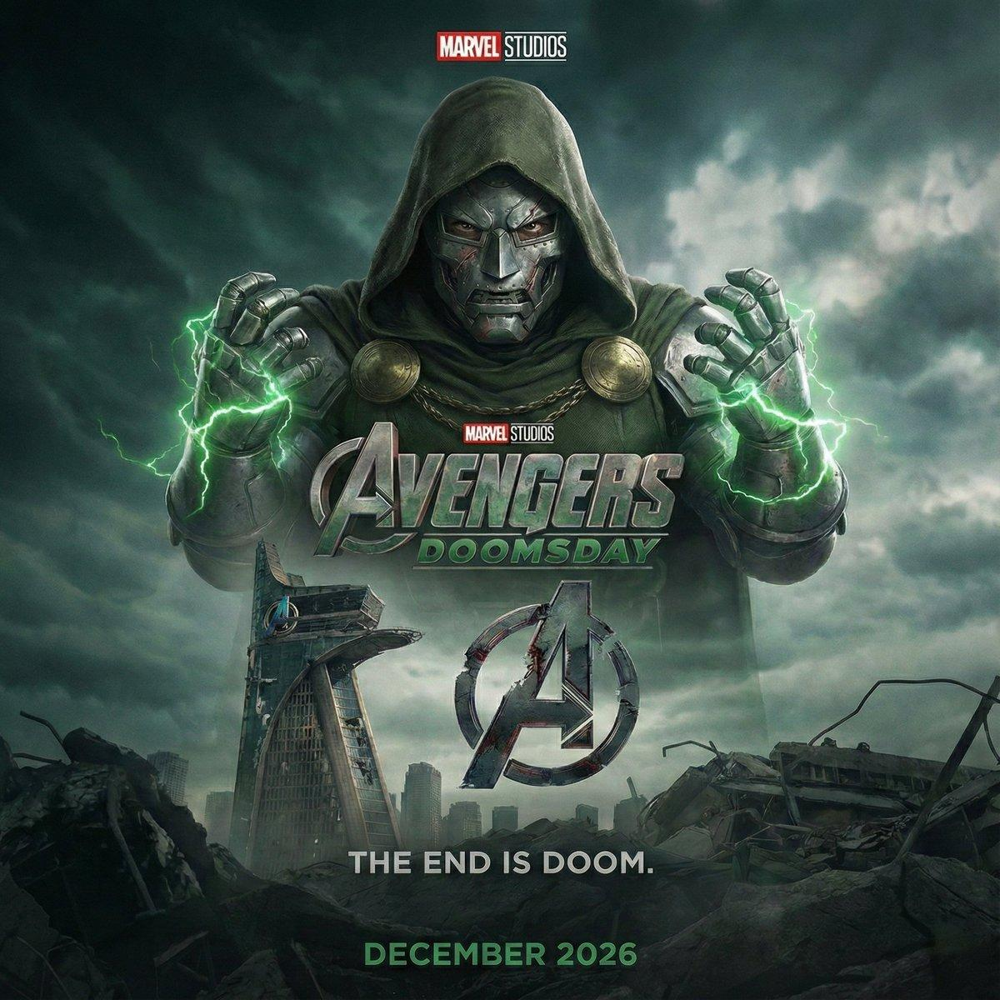
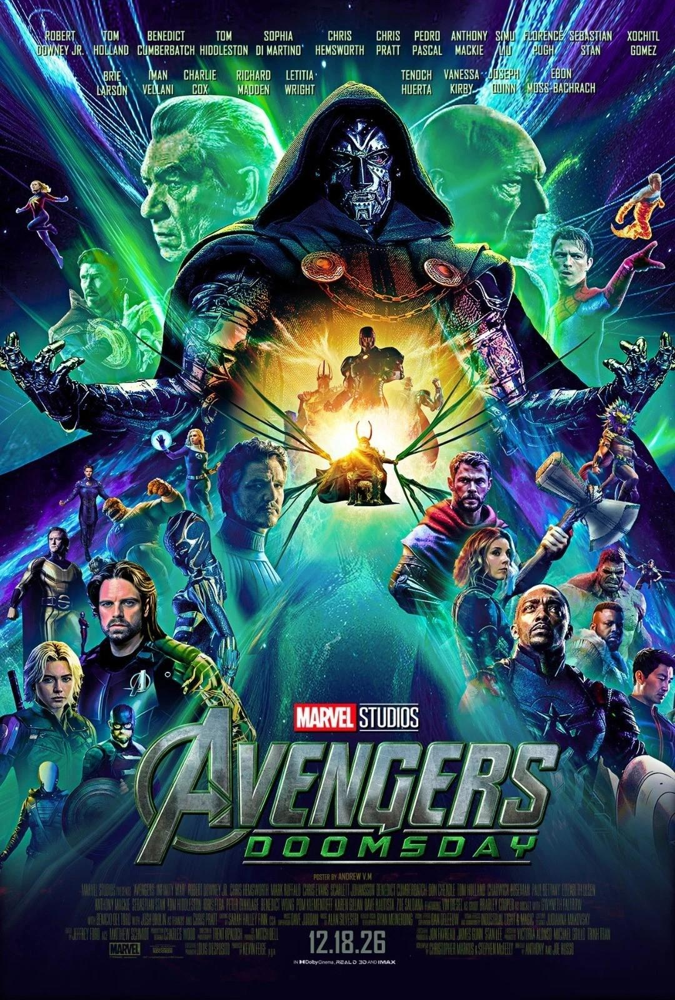

DOCTOR DOOM LLEGA AL MCU:
MARVEL ROMPE INTERNET CON EL PRIMER TRÁILER

Marvel Studios finalmente mostró las primeras cartas de Avengers: Doomsday, liberando el esperado primer tráiler oficial de la película que marcará el principio del desenlace de la Saga del Multiverso. El avance no tardó en convertirse en tendencia mundial gracias al impactante regreso de Robert Downey Jr., quien deja atrás a Tony Stark para convertirse en el icónico Doctor Doom, el nuevo gran antagonista del Universo Cinematográfico de Marvel.
Un choque multiversal sin precedentes
El tráiler adelanta una historia donde héroes provenientes de distintos universos deberán enfrentarse en una guerra que amenaza con destruir toda la realidad. Entre los momentos más impactantes destacan:
🎬 MOMENTOS CLAVE DEL TRÁILER
| MOMENTO | DESCRIPCIÓN |
|---|---|
| DOCTOR DOOM | Aparece por primera vez con su clásica máscara metálica |
| THOR & STEVE ROGERS | El reencuentro más emotivo del avance |
| SHANG-CHI & GAMBITO | Combate espectacular favorito de los fans |
| YELENA vs MYSTIQUE | Intensa batalla cuerpo a cuerpo |
| LOKI | Regresa con el uniforme clásico de la TVA |
| CONVERGENCIA | Cuatro Fantásticos, X-Men, Wakanda y Nuevos Vengadores en una misma historia |
Los secretos que dejó el tráiler
Como ya es tradición en Marvel, el avance está repleto de detalles ocultos que han disparado las teorías entre los seguidores.

Los hermanos Russo vuelven al mando
Después del éxito histórico de Avengers: Infinity War y Avengers: Endgame, los hermanos Anthony y Joe Russo regresan como directores para intentar repetir la fórmula que convirtió al Universo Cinematográfico de Marvel en un fenómeno mundial. La película reunirá a personajes de prácticamente todas las franquicias actuales de Marvel, incluyendo a los Cuatro Fantásticos, los X-Men, Wakanda y los Nuevos Vengadores, en una batalla que promete redefinir el futuro del estudio y abrir una nueva etapa para la franquicia.
📅 ESTRENO
| DETALLE | INFO |
|---|---|
| PELÍCULA | Avengers: Doomsday |
| FECHA DE ESTRENO | 18 de diciembre de 2026 |
| DIRECTORES | Anthony y Joe Russo |
| VILLANO PRINCIPAL | Doctor Doom (Robert Downey Jr.) |
| SAGA | Desenlace de la Saga del Multiverso |
🎬 Uno de los estrenos más esperados del año
Avengers: Doomsday llegará exclusivamente a los cines el 18 de diciembre de 2026, convirtiéndose en uno de los estrenos cinematográficos más esperados del año y en el evento que dará inicio al desenlace de la Saga del Multiverso.

¿Y tú qué opinas?
¿Crees que Doctor Doom será el gran villano del MCU o en realidad intentará salvar el multiverso de una amenaza aún más peligrosa?
¿Qué momento del tráiler fue el que más te sorprendió?
¡Déjanos tu opinión en los comentarios!